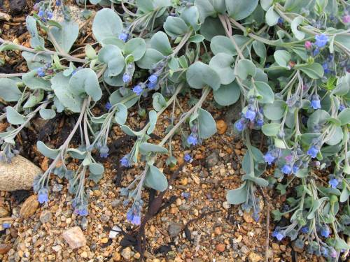

Slåttemark med nyserot Veratrum album, Smalfjordsletten,
Fi Tana
23.august
Åkerbær Rubus arcticus i
slåttemark Smalfjordsletten, Fi Tana 23.august
Tanatimian Thymus serpyllus ssp. tanaënsis, Leirpollen,
Fi Tana, 23.august.
Sibirgrasløk Allium schoenoprasum ssp. sibiricum,
Fi Nesseby 16. august.
Russemjelt Oxytropis campestris ssp. sordida, Fi Vadsø 15. august.
Russekjeks Conioselinum tataricum, Neverfjordklubben, Fi Kvalsund 25. august.
Brunøyet vokssopp Hygrocybe virginea var. fuscescens,
Nordeidet på Reinøya, Tr Karlsøy 28. august. Dette er en stor og
flott naturbeitemark der Virve Ravolainen tidligere har tatt
hovedfag på beitemarkssopper.
Sint lemen Lemmus lemmus, en av veldig mange på Bugøynes kirkegård,
Fi Sør-Varanger
21. august. Omtrent alle grasmarker i Finnmark var kraftig
bearbeidet av smågnagere i 2011.
Pomorstjerneblom Stellaria hebecalyx (CR) ved Vardøhus festning,
Fi Vardø 15 august.
Rogaland
I fuktige skoger forekommer lavarten Arthonia arthonioides
på bjørkestammer, her fra Dokkebekken i Dirdal, Gjesdal, 27. mai.
Grå buktkrinslav Hypotrachyna laevigata (EN), forekommer relativt sjelden
i regnskog, som her ved Nonsknuten i Høle, Sandnes 29. mai.
Vasshalemose, Isothecium holtii (VU), i bekk ved Grov i Sokndal
31. mai.
De grågrønne trådaktige skuddene på barken av denne bjørka er
dvergperlemose Microlejeunea ulicina, fotografert ved Krusafjellet i
Høle, Sandnes 1. juni.
Småhinnemose Plagiochila punctata, forekommer her og der på
bergvegger i fuktig nordvendt regnskog. Her fra Vier ved Hommersåk,
Sandnes, 1. juni.
Stor og fin tue med purpurmose Pleurozia purpurea, Kjervoll
i Dirdal, Gjesdal 27. mai.
Midt-Norge
2. funn i Norge av skrubbrødskivesopp Entoloma scabiosum
(NT) ble gjort i MR Nesset. Eikesdalen 17. september, dette er
samtidig solid nordgrense for arten.
Grynporelav Sticta limbata i Julsundet, MR Aukra 19.
juli.
Gullprikklav Pseudocyphellaria crocata (VU) har en del
bergforekomster på ytterkysten i sørlige del av Møre og Romsdal.
Dette er fra en tidligere kjent lokalitet på nordsida av Gossen i MR
Aukra, 5. juli.
Havburkne Asplenium marinum (NT) finnes noen steder på
ytterkysten av Møre og Romsdal, her fra Dollsteinhola på Sandsøya i
MR Sande 4. juni.
Et lite glimt fra trøffeljakta i Eikesdalen høsten 2011:
Hymenogaster decorus (dvergknollslekta, uten norsk navn) er
gravd opp under hassel i bergerota ved MR Nesset: Rangåfjellet 17.
september. Dette er samtidig nordgrense.
Irsk myrklegg Pedicularis sylvatica ssp. hibernica
(EN) skiller seg fra kystmyrklegg bl.a. ved å være kraftig
håret. Planten på bildet ble fotografert på sørvestsida av Sandsøya
i MR Sande 4. juni.

Østersurt Mertensia maritima har en god bestand i
Horremsbukta, MR Aukra, 4. juli.
Reinrose Dryas octopetala fotografert på en av de mest
kystnære forkomstene på Nordvestlandet, ut mot havet på Hornet,
Sandsøya i MR Sande 3. juli.
Sylsmåarve Sagina subulata er en ytterkystplante på
Nordvestlandet, bildet er tatt på sørvestsida av Sandsøya i MR Sande
4. juni.
Seksflekket bloddråpesvermer Zygaena filipendulae er
relativt vanlig på kysten av Møre og Romsdal. Her er den avbildet på
Gossen, MR Aukra 11. juli.
Gullrublom Draba alpina (NT) fra Gjevilvasskamman, ST
Oppdal 16. juli.
Blyttsveve Hieracium blyttianum fotografert på
Langbakksetra, Gjøra i MR Sunndal 15. juli. Her ble den funnet for
over 100 år siden av Ove Dahl, og vokser her fortsatt så lenge
skjøtselen fortsetter. Denne sveva er meget sjelden og sto tidligere
på rødlista (2006), men ble ikke vurdert i 2010-rødlista.
Svartkurle Nigritella nigra (EN) fotografert på dens
høyestliggende lokalitet i Norge, Gjevilvassdalen i ST Oppdal, ca.
1260 meter over havet.
Styvingstrær og høstingsskog Sør-Norge
Sammen med Harald Bratli, NINA, har jeg studert hva som vokser på
gamle styvingstrær av alm, ask og lind en del steder i Sør-Norge (Østlandet-Nordmøre),
nedenfor er noe av det vi fant.
Kalkraggmose Anomodon viticulosus danner ofte store
matter ved basis av styva almetrær, her fra SF Luster: Mørkrisdalen
8. september.
Kveilmose Pterogonium gracile er relativt vanlig på
styvingstrær på Vestlandet, bildet er tatt på ask i SF Balestrand:
ved Raundalen 10. september.
Klosterlav Biatoridium monasteriense (NT) på styva alm
Ro Hjelmeland Målandsdalen 30. september.
Blådoggnål Sclerophora farinacea (VU) på styva alm i SF
Luster: Mørkrisdalen 8. september.
Thelopsis rubella (VU) er en lavart med kystuybredelse
på gamle edellauvtrær, her på styva alm ved Ho Osterøy: Kløvneset
15. september.
Armillaria lutea er en honningsopp som ofte finnes på
gamle edellauvtrær, her funnet på styva ask i Ho Kvam: Strandadalen
ved Vasshaugen 14. september.
Løvbarkskorpe Dendrothele alliacea (NT) er en relativt
typisk art på bark av gammel, styva alm som her i Ro Hjelmeland
Målandsdalen 30. september.
Almebroddsopp Hymenochaete ulmicola (VU) er også en
relativt typisk art på bark av gammel, styva alm som her i Ho Odda:
Buerdalen: Stidleskor 1. oktober.
Almekullsopp Hypoxylon vogesiacum (NT) er i Norge en
typisk art på død ved av alm, og ofte på nedramla styvingstrær.
Bildet er fra MR Nesset: Ljåstranda i Eikesdalen 11. oktober.
Anders Wollan beundrer en almeknippesopp Hypsizygus ulmarius
tre meter oppe i ei styva alm MR Nesset Eikesdalen: under
Rangåfjellet 17. september.
Pelskjuke Inonotus hispidus (EN) har en utbredelse
konsentrert hovedsakelig til indre Sogn hvor den vokser på styva
ask, her tatt på SF Leikanger: Grinde 9. september.
Narrepiggsopp Kavinia himantia (NT) vokser gjerne blant
moser på bark av styva alm og ask. Her er den fotografert på styva
alm i Ho Granvin: Folkedal 15. september.
Rynkesagsopp Lentinellus vulpinus (NT) er en ganske
sjelden art, her fotografert på styva alm i SF Luster: Mørkrisdalen
8. september.
Et kjempeeksemplar av flat begersopp Peziza repanda, som
var over 25 cm i diameter og ble funnet på en nedramla styvingsalm i
Ho Voss: Teigdalen 12. september.
Kastanjestilkkjuke Polyporus badius (VU) er en av
almespesialistene blant soppene, og er ganske sjelden. Bildet er fra
MR Nesset: Ljåstranda 18. september.
Ferskenpote Rhodotus palmatus (EN) er en meget sjelden,
almetilknyttet vedboende sopp som er funnet i noen av de beste
områdene for styva alm i Norge, her fra SF Luster Mørkrisdalen 8.
september.